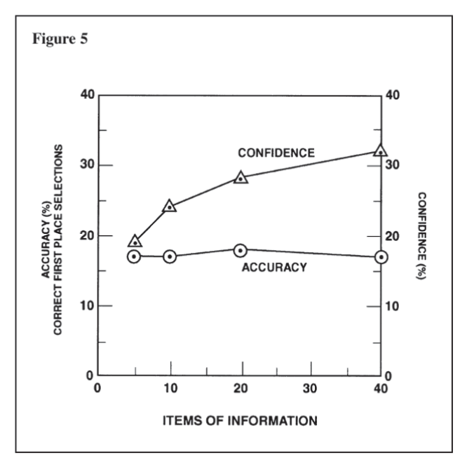

Chapter 5 Do You Really Need More Information?
The difficulties associated with intelligence analysis are often attributed to the inadequacy of available information. Thus the US Intelligence Community invests heavily in improved intelligence collection systems while managers of analysis lament the comparatively small sums devoted to enhancing analytical resources, improving analytical methods, or gaining better understanding of the cognitive processes involved in making analytical judgments. This chapter questions the often-implicit assumption that lack of information is the principal obstacle to accurate intelligence judgments.53
* * * * * * * * * * * * * * * * * * *
Using experts in a variety of fields as test subjects, experimental psychologists have examined the relationship between the amount of information available to the experts, the accuracy of judgments they make based on this information, and the experts’ confidence in the accuracy of these judgments. The word “information,” as used in this context, refers to the totality of material an analyst has available to work with in making a judgment.
Using experts in a variety of fields as test subjects, experimental psychologists have examined the relationship between the amount of information available to the experts, the accuracy of judgments they make based on this information, and the experts’ confidence in the accuracy of these judgments. The word “information,” as used in this context, refers to the totality of material an analyst has available to work with in making a judgment.
Key findings from this research are:
As will be noted below, these experimental findings should not necessarily be accepted at face value. For example, circumstances exist in which additional information does contribute to more accurate analysis. However, there also are circumstances in which additional information—particularly contradictory information—decreases rather than increases an analyst’s confidence.
To interpret the disturbing but not surprising findings from these experiments, it is necessary to consider four different types of information and discuss their relative value in contributing to the accuracy of analytical judgments. It is also helpful to distinguish analysis in which results are driven by the data from analysis that is driven by the conceptual framework employed to interpret the data.
Understanding the complex relationship between amount of information and accuracy of judgment has implications for both the management and conduct of intelligence analysis. Such an understanding suggests analytical procedures and management initiatives that may indeed contribute to more accurate analytical judgments. It also suggests that resources needed to attain a better understanding of the entire analytical process might profitably be diverted from some of the more costly intelligence collection programs.
These findings have broad relevance beyond the Intelligence Community. Analysis of information to gain a better understanding of current developments and to estimate future outcomes is an essential component of decisionmaking in any field. In fact, the psychological experiments that are most relevant have been conducted with experts in such diverse fields as medical and psychological diagnosis, stock market analysis, weather forecasting, and horserace handicapping. The experiments reflect basic human processes that affect analysis of any subject.
One may conduct experiments to demonstrate these phenomena in any field in which experts analyze a finite number of identifiable and classifiable kinds of information to make judgments or estimates that can subsequently be checked for accuracy. The stock market analyst, for example, commonly works with information concerning price-earnings ratios, profit margins, earnings per share, market volume, and resistance and support levels, and it is relatively easy to measure quantitatively the accuracy of the resulting predictions. By controlling the information made available to a group of experts and then checking the accuracy of judgments based on this information, it is possible to investigate how people use information to arrive at analytical judgments.
An Experiment: Betting on the Horses
A description of one such experiment serves to illustrate the procedure.54 Eight experienced horserace handicappers were shown a list of 88 variables found on a typical past-performance chart—for example, the weight to be carried; the percentage of races in which horse finished first, second, or third during the previous year; the jockey’s record; and the number of days since the horse’s last race. Each handicapper was asked to identify, first, what he considered to be the five most important items of information—those he would wish to use to handicap a race if he were limited to only five items of information per horse. Each was then asked to select the 10, 20, and 40 most important variables he would use if limited to those levels of information.
At this point, the handicappers were given true data (sterilized so that horses and actual races could not be identified) for 40 past races and were asked to rank the top five horses in each race in order of expected finish. Each handicapper was given the data in increments of the 5, 10, 20 and 40 variables he had judged to be most useful. Thus, he predicted each race four times—once with each of the four different levels of information. For each prediction, each handicapper assigned a value from 0 to 100 percent to indicate degree of confidence in the accuracy of his prediction.
When the handicappers’ predictions were compared with the actual outcomes of these 40 races, it was clear that average accuracy of predictions remained the same regardless of how much information the handicappers had available. Three of the handicappers actually showed less accuracy as the amount of information increased, two improved their accuracy, and three were unchanged. All, however, expressed steadily increasing confidence in their judgments as more information was received. This relationship between amount of information, accuracy of the handicappers’ prediction of the first place winners, and the handicappers’ confidence in their predictions is shown in Figure 5.

With only five items of information, the handicappers’ confidence was well calibrated with their accuracy, but they became overconfident as additional information was received.
The same relationships among amount of information, accuracy, and analyst confidence have been confirmed by similar experiments in other fields.55 In one experiment with clinical psychologists, a psychological case file was divided into four sections representing successive chronological periods in the life of a relatively normal individual. Thirtytwo psychologists with varying levels of experience were asked to make judgments on the basis of this information. After reading each section of the case file, the psychologists answered 25 questions (for which there were known answers) about the personality of the subject of the file. As in other experiments, increasing information resulted in a strong rise in confidence but a negligible increase in accuracy.56
A series of experiments to examine the mental processes of medical doctors diagnosing illness found little relationship between thoroughness of data collection and accuracy of diagnosis. Medical students whose selfdescribed research strategy stressed thorough collection of information (as opposed to formation and testing of hypotheses) were significantly below average in the accuracy of their diagnoses. It seems that the explicit formulation of hypotheses directs a more efficient and effective search for information.57
Modeling Expert Judgment
Another significant question concerns the extent to which analysts possess an accurate understanding of their own mental processes. How good is their insight into how they actually weight evidence in making judgments? For each situation to be analyzed, they have an implicit “mental model” consisting of beliefs and assumptions as to which variables are most important and how they are related to each other. If analysts have good insight into their own mental model, they should be able to identify and describe the variables they have considered most important in making judgments.
There is strong experimental evidence, however, that such self-insight is usually faulty. The expert perceives his or her own judgmental process, including the number of different kinds of information taken into account, as being considerably more complex than is in fact the case. Experts overestimate the importance of factors that have only a minor impact on their judgment and underestimate the extent to which their decisions are based on a few major variables. In short, people’s mental models are simpler than they think, and the analyst is typically unaware not only of which variables should have the greatest influence, but also which variables actually are having the greatest influence.
All this has been demonstrated by experiments in which analysts were asked to make quantitative estimates concerning a relatively large number of cases in their area of expertise, with each case defined by a number of quantifiable factors. In one experiment, for example, stock market analysts were asked to predict long-term price appreciation for 50 securities, with each security being described in such terms as price/earnings ratio, corporate earnings growth trend, and dividend yield.58 After completing this task, the analysts were asked to explain how they reached their conclusions, including how much weight they attached to each of the variables. They were instructed to be sufficiently explicit that another person going through the same information could apply the same judgmental rules and arrive at the same conclusions.
In order to compare this verbal rationalization with the judgmental policy reflected in the stock market analysts’ actual decisions, multiple regression analysis or other similar statistical procedures can be used to develop a mathematical model of how each analyst actually weighed and combined information on the relevant variables.59 There have been at least eight studies of this type in diverse fields,60 including one involving prediction of future socioeconomic growth of underdeveloped nations.61 The mathematical model based on the analyst’s actual decisions is invariably a more accurate description of that analyst’s decisionmaking than the analyst’s own verbal description of how the judgments were made.
Although the existence of this phenomenon has been amply demonstrated, its causes are not well understood. The literature on these experiments contains only the following speculative explanation:
Possibly our feeling that we can take into account a host of different factors comes about because, although we remember that at some time or other we have attended to each of the different factors, we fail to notice that it is seldom more than one or two that we consider at any one time.62
When Does New Information Affect Our Judgment?
To evaluate the relevance and significance of these experimental findings in the context of intelligence analysts’ experiences, it is necessary to distinguish four types of additional information that an analyst might receive:
One would not expect such supplementary information to affect the overall accuracy of the analyst’s judgment, and it is readily understandable that further detail that is consistent with previous information increases the analyst’s confidence. Analyses for which considerable depth of detail is available to support the conclusions tend to be more persuasive to their authors as well as to their readers.
• Identification of additional variables: Information on additional variables permits the analyst to take into account other factors that may affect the situation. This is the kind of additional information used in the horserace handicapper experiment. Other experiments have employed some combination of additional variables and additional detail on the same variables. The finding that judgments are based on a few critical variables rather than on the entire spectrum of evidence helps to explain why information on additional variables does not normally improve predictive accuracy. Occasionally, in situations when there are known gaps in an analyst’s understanding, a single report concerning some new and previously unconsidered factor—for example, an authoritative report on a policy decision or planned coup d’etat—will have a major impact on the analyst’s judgment. Such a report would fall into one of the next two categories of new information.
Current intelligence reporting tends to deal with this kind of information; for example, an analyst may learn that a dissident group is stronger than had been anticipated. New facts affect the accuracy of judgments when they deal with changes in variables that are critical to the estimates. Analysts’ confidence in judgments based on such information is influenced by their confidence in the accuracy of the information as well as by the amount of information.
• Information concerning which variables are most important and how they relate to each other: Knowledge and assumptions as to which variables are most important and how they are interrelated comprise the mental model that tells the analyst how to analyze the data received. Explicit investigation of such relationships is one factor that distinguishes systematic research from current intelligence reporting and raw intelligence. In the context of the horserace handicapper experiment, for example, handicappers had to select which variables to include in their analysis. Is weight carried by a horse more, or less, important than several other variables that affect a horse’s performance? Any information that affects this judgment influences how the handicapper analyzes the available data; that is, it affects his mental model.
The accuracy of an analyst’s judgment depends upon both the accuracy of our mental model (the fourth type of information discussed above) and the accuracy of the values attributed to the key variables in the model (the third type of information discussed above). Additional detail on variables already in the analyst’s mental model and information on other variables that do not in fact have a significant influence on our judgment (the first and second types of information) have a negligible impact on accuracy, but form the bulk of the raw material analysts work with. These kinds of information increase confidence because the conclusions seem to be supported by such a large body of data.
This discussion of types of new information is the basis for distinguishing two types of analysis- data-driven analysis and conceptuallydriven analysis.
Data-Driven Analysis
In this type of analysis, accuracy depends primarily upon the accuracy and completeness of the available data. If one makes the reasonable assumption that the analytical model is correct and the further assumption that the analyst properly applies this model to the data, then the accuracy of the analytical judgment depends entirely upon the accuracy and completeness of the data.
Analyzing the combat readiness of a military division is an example of data-driven analysis. In analyzing combat readiness, the rules and procedures to be followed are relatively well established. The totality of these procedures comprises a mental model that influences perception of the intelligence collected on the unit and guides judgment concerning what information is important and how this information should be analyzed to arrive at judgments concerning readiness.
Most elements of the mental model can be made explicit so that other analysts may be taught to understand and follow the same analytical procedures and arrive at the same or similar results. There is broad, though not necessarily universal, agreement on what the appropriate model is. There are relatively objective standards for judging the quality of analysis, inasmuch as the conclusions follow logically from the application of the agreed-upon model to the available data.
Conceptually Driven Analysis
Conceptually driven analysis is at the opposite end of the spectrum from data-driven analysis. The questions to be answered do not have neat boundaries, and there are many unknowns. The number of potentially relevant variables and the diverse and imperfectly understood relationships among these variables involve the analyst in enormous complexity and uncertainty. There is little tested theory to inform the analyst concerning which of the myriad pieces of information are most important and how they should be combined to arrive at probabilistic judgments.
In the absence of any agreed-upon analytical schema, analysts are left to their own devices. They interpret information with the aid of mental models that are largely implicit rather than explicit. Assumptions concerning political forces and processes in the subject country may not be apparent even to the analyst. Such models are not representative of an analytical consensus. Other analysts examining the same data may well reach different conclusions, or reach the same conclusions but for different reasons. This analysis is conceptually driven, because the outcome depends at least as much upon the conceptual framework employed to analyze the data as it does upon the data itself.
To illustrate further the distinction between data-driven and conceptually driven analysis, it is useful to consider the function of the analyst responsible for current intelligence, especially current political intelligence as distinct from longer term research. The daily routine is driven by the incoming wire service news, embassy cables, and clandestine-source reporting from overseas that must be interpreted for dissemination to consumers throughout the Intelligence Community. Although current intelligence reporting is driven by incoming information, this is not what is meant by data-driven analysis. On the contrary, the current intelligence analyst’s task is often extremely concept-driven. The analyst must provide immediate interpretation of the latest, often unexpected events. Apart from his or her store of background information, the analyst may have no data other than the initial, usually incomplete report. Under these circumstances, interpretation is based upon an implicit mental model of how and why events normally transpire in the country for which the analyst is responsible. Accuracy of judgment depends almost exclusively upon accuracy of the mental model, for there is little other basis for judgment.
It is necessary to consider how this mental model gets tested against reality, and how it can be changed to improve the accuracy of analytical judgment. Two things make it hard to change one’s mental model. The first is the nature of human perception and information-processing. The second is the difficulty, in many fields, of learning what truly is an accurate model.
Partly because of the nature of human perception and informationprocessing, beliefs of all types tend to resist change. This is especially true of the implicit assumptions and supposedly self-evident truths that play an important role in forming mental models. Analysts are often surprised to learn that what are to them self-evident truths are by no means selfevident to others, or that self-evident truth at one point in time may be commonly regarded as uninformed assumption 10 years later.
Information that is consistent with an existing mind-set is perceived and processed easily and reinforces existing beliefs. Because the mind strives instinctively for consistency, information that is inconsistent with an existing mental image tends to be overlooked, perceived in a distorted manner, or rationalized to fit existing assumptions and beliefs.63
Learning to make better judgments through experience assumes systematic feedback on the accuracy of previous judgments and an ability to link the accuracy of a judgment with the particular configuration of variables that prompted an analyst to make that judgment. In practice, intelligence analysts get little systematic feedback, and even when they learn that an event they had foreseen has actually occurred or failed to occur, they typically do not know for certain whether this happened for the reasons they had foreseen. Thus, an analyst’s personal experience may be a poor guide to revision of his or her mental mode.64
Mosaic Theory of Analysis
Understanding of the analytic process has been distorted by the mosaic metaphor commonly used to describe it. According to the mosaic theory of intelligence, small pieces of information are collected that, when put together like a mosaic or jigsaw puzzle, eventually enable analysts to perceive a clear picture of reality. The analogy suggests that accurate estimates depend primarily upon having all the pieces, that is, upon accurate and relatively complete information. It is important to collect and store the small pieces of information, as these are the raw material from which the picture is made; one never knows when it will be possible for an astute analyst to fit a piece into the puzzle. Part of the rationale for large technical intelligence collection systems is rooted in this mosaic theory.
Insights from cognitive psychology suggest that intelligence analysts do not work this way and that the most difficult analytical tasks cannot be approached in this manner. Analysts commonly find pieces that appear to fit many different pictures. Instead of a picture emerging from putting all the pieces together, analysts typically form a picture first and then select the pieces to fit. Accurate estimates depend at least as much upon the mental model used in forming the picture as upon the number of pieces of the puzzle that have been collected.
A more accurate analogy for describing how intelligence analysis should work is medical diagnosis. The doctor observes indicators (symptoms) of what is happening, uses his or her specialized knowledge of how the body works to develop hypotheses that might explain these observations, conducts tests to collect additional information to evaluate the hypotheses, then makes a diagnosis. This medical analogy focuses attention on the ability to identify and evaluate all plausible hypotheses. Collection is focused narrowly on information that will help to discriminate the relative probability of alternate hypothesis.
To the extent that this medical analogy is the more appropriate guide to understanding the analytical process, there are implications for the allocation of limited intelligence resources. While analysis and collection are both important, the medical analogy attributes more value to analysis and less to collection than the mosaic metaphor.
Conclusions
To the leaders and managers of intelligence who seek an improved intelligence product, these findings offer a reminder that this goal can be achieved by improving analysis as well as collection. There appear to be inherent practical limits on how much can be gained by efforts to improve collection. By contrast, an open and fertile field exists for imaginative efforts to improve analysis.
These efforts should focus on improving the mental models employed by analysts to interpret information and the analytical processes used to evaluate it. While this will be difficult to achieve, it is so critical to effective intelligence analysis that even small improvements could have large benefits. Specific recommendations are included the next three chapters and in Chapter 14, “Improving Intelligence Analysis.”